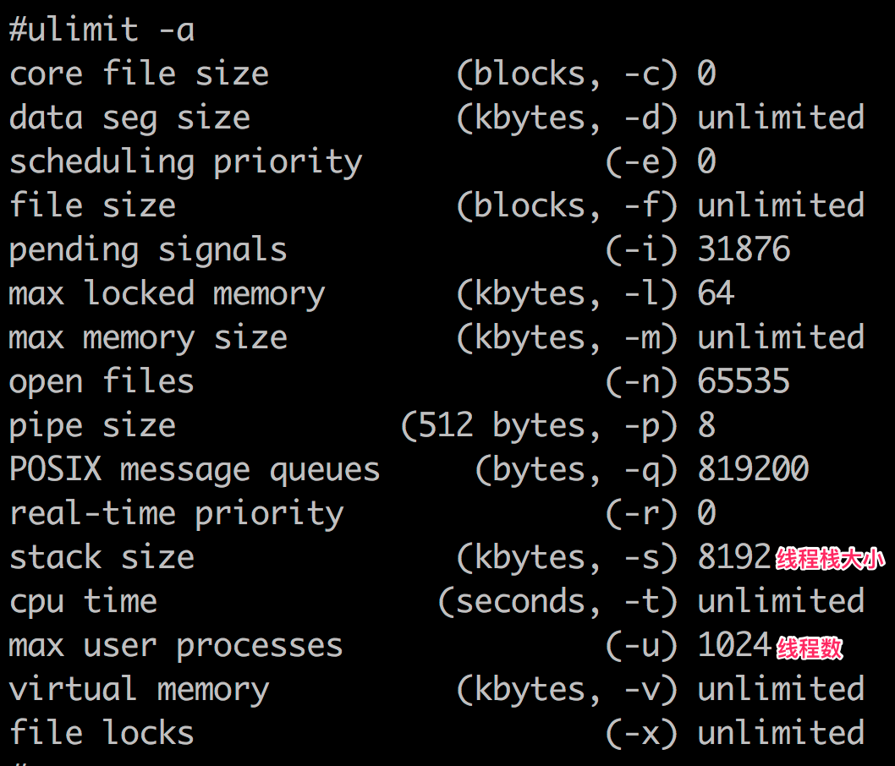
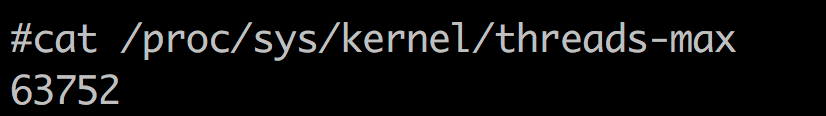
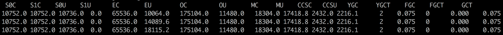
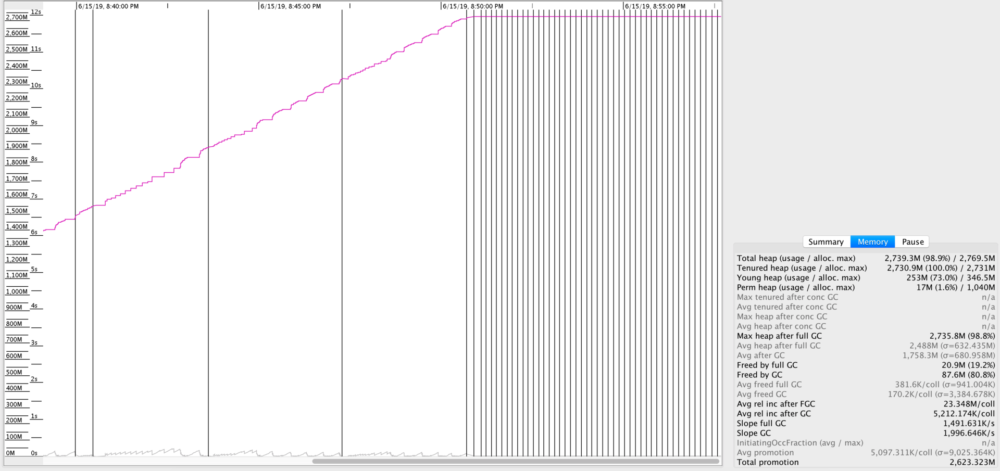
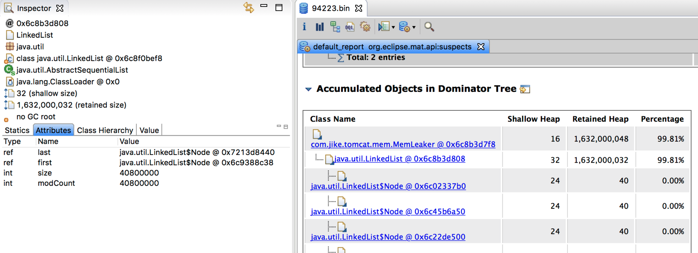

- 00 开篇词 Java程序员如何快速成长？.md
- 01 Web容器学习路径.md
- 02 HTTP协议必知必会.md
- 03 你应该知道的Servlet规范和Servlet容器.md
- 04 实战：纯手工打造和运行一个Servlet.md
- 05 Tomcat系统架构（上）： 连接器是如何设计的？.md
- 06 Tomcat系统架构（下）：聊聊多层容器的设计.md
- 07 Tomcat如何实现一键式启停？.md
- 08 Tomcat的“高层们”都负责做什么？.md
- 09 比较：Jetty架构特点之Connector组件.md
- 10 比较：Jetty架构特点之Handler组件.md
- 11 总结：从Tomcat和Jetty中提炼组件化设计规范.md
- 12 实战：优化并提高Tomcat启动速度.md
- 13 热点问题答疑（1）：如何学习源码？.md
- 14 NioEndpoint组件：Tomcat如何实现非阻塞I_O？.md
- 15 Nio2Endpoint组件：Tomcat如何实现异步I_O？.md
- 16 AprEndpoint组件：Tomcat APR提高I_O性能的秘密.md
- 17 Executor组件：Tomcat如何扩展Java线程池？.md
- 18 新特性：Tomcat如何支持WebSocket？.md
- 19 比较：Jetty的线程策略EatWhatYouKill.md
- 20 总结：Tomcat和Jetty中的对象池技术.md
- 21 总结：Tomcat和Jetty的高性能、高并发之道.md
- 22 热点问题答疑（2）：内核如何阻塞与唤醒进程？.md
- 23 Host容器：Tomcat如何实现热部署和热加载？.md
- 24 Context容器（上）：Tomcat如何打破双亲委托机制？.md
- 25 Context容器（中）：Tomcat如何隔离Web应用？.md
- 26 Context容器（下）：Tomcat如何实现Servlet规范？.md
- 27 新特性：Tomcat如何支持异步Servlet？.md
- 28 新特性：Spring Boot如何使用内嵌式的Tomcat和Jetty？.md
- 29 比较：Jetty如何实现具有上下文信息的责任链？.md
- 30 热点问题答疑（3）：Spring框架中的设计模式.md
- 31 Logger组件：Tomcat的日志框架及实战.md
- 32 Manager组件：Tomcat的Session管理机制解析.md
- 33 Cluster组件：Tomcat的集群通信原理.md
- 34 JVM GC原理及调优的基本思路.md
- 35 如何监控Tomcat的性能？.md
- 36 Tomcat I_O和线程池的并发调优.md
- 37 Tomcat内存溢出的原因分析及调优.md
- 38 Tomcat拒绝连接原因分析及网络优化.md
- 39 Tomcat进程占用CPU过高怎么办？.md
- 40 谈谈Jetty性能调优的思路.md
- 41 热点问题答疑（4）： Tomcat和Jetty有哪些不同？.md
- 特别放送 如何持续保持对学习的兴趣？.md
- 结束语 静下心来，品味经典.md
37 Tomcat内存溢出的原因分析及调优
作为Java程序员，我们几乎都会碰到java.lang.OutOfMemoryError异常，但是你知道有哪些原因可能导致JVM抛出OutOfMemoryError异常吗？
JVM在抛出java.lang.OutOfMemoryError时，除了会打印出一行描述信息，还会打印堆栈跟踪，因此我们可以通过这些信息来找到导致异常的原因。在寻找原因前，我们先来看看有哪些因素会导致OutOfMemoryError，其中内存泄漏是导致OutOfMemoryError的一个比较常见的原因，最后我们通过一个实战案例来定位内存泄漏。
内存溢出场景及方案
java.lang.OutOfMemoryError: Java heap space
JVM无法在堆中分配对象时，会抛出这个异常，导致这个异常的原因可能有三种：
- 内存泄漏。Java应用程序一直持有Java对象的引用，导致对象无法被GC回收，比如对象池和内存池中的对象无法被GC回收。
- 配置问题。有可能是我们通过JVM参数指定的堆大小（或者未指定的默认大小），对于应用程序来说是不够的。解决办法是通过JVM参数加大堆的大小。
- finalize方法的过度使用。如果我们想在Java类实例被GC之前执行一些逻辑，比如清理对象持有的资源，可以在Java类中定义finalize方法，这样JVM GC不会立即回收这些对象实例，而是将对象实例添加到一个叫“
java.lang.ref.Finalizer.ReferenceQueue”的队列中，执行对象的finalize方法，之后才会回收这些对象。Finalizer线程会和主线程竞争CPU资源，但由于优先级低，所以处理速度跟不上主线程创建对象的速度，因此ReferenceQueue队列中的对象就越来越多，最终会抛出OutOfMemoryError。解决办法是尽量不要给Java类定义finalize方法。
java.lang.OutOfMemoryError: GC overhead limit exceeded
出现这种OutOfMemoryError的原因是，垃圾收集器一直在运行，但是GC效率很低，比如Java进程花费超过98％的CPU时间来进行一次GC，但是回收的内存少于2％的JVM堆，并且连续5次GC都是这种情况，就会抛出OutOfMemoryError。
解决办法是查看GC日志或者生成Heap Dump，确认一下是不是内存泄漏，如果不是内存泄漏可以考虑增加Java堆的大小。当然你还可以通过参数配置来告诉JVM无论如何也不要抛出这个异常，方法是配置-XX:-UseGCOverheadLimit，但是我并不推荐这么做，因为这只是延迟了OutOfMemoryError的出现。
java.lang.OutOfMemoryError: Requested array size exceeds VM limit
从错误消息我们也能猜到，抛出这种异常的原因是“请求的数组大小超过JVM限制”，应用程序尝试分配一个超大的数组。比如应用程序尝试分配512MB的数组，但最大堆大小为256MB，则将抛出OutOfMemoryError，并且请求的数组大小超过VM限制。
通常这也是一个配置问题（JVM堆太小），或者是应用程序的一个Bug，比如程序错误地计算了数组的大小，导致尝试创建一个大小为1GB的数组。
java.lang.OutOfMemoryError: MetaSpace
如果JVM的元空间用尽，则会抛出这个异常。我们知道JVM元空间的内存在本地内存中分配，但是它的大小受参数MaxMetaSpaceSize的限制。当元空间大小超过MaxMetaSpaceSize时，JVM将抛出带有MetaSpace字样的OutOfMemoryError。解决办法是加大MaxMetaSpaceSize参数的值。
java.lang.OutOfMemoryError: Request size bytes for reason. Out of swap space
当本地堆内存分配失败或者本地内存快要耗尽时，Java HotSpot VM代码会抛出这个异常，VM会触发“致命错误处理机制”，它会生成“致命错误”日志文件，其中包含崩溃时线程、进程和操作系统的有用信息。如果碰到此类型的OutOfMemoryError，你需要根据JVM抛出的错误信息来进行诊断；或者使用操作系统提供的DTrace工具来跟踪系统调用，看看是什么样的程序代码在不断地分配本地内存。
java.lang.OutOfMemoryError: Unable to create native threads
抛出这个异常的过程大概是这样的：
- Java程序向JVM请求创建一个新的Java线程。
- JVM本地代码（Native Code）代理该请求，通过调用操作系统API去创建一个操作系统级别的线程Native Thread。
- 操作系统尝试创建一个新的Native Thread，需要同时分配一些内存给该线程，每一个Native Thread都有一个线程栈，线程栈的大小由JVM参数
-Xss决定。 - 由于各种原因，操作系统创建新的线程可能会失败，下面会详细谈到。
- JVM抛出“java.lang.OutOfMemoryError: Unable to create new native thread”错误。
因此关键在于第四步线程创建失败，JVM就会抛出OutOfMemoryError，那具体有哪些因素会导致线程创建失败呢？
1.内存大小限制：我前面提到，Java创建一个线程需要消耗一定的栈空间，并通过-Xss参数指定。请你注意的是栈空间如果过小，可能会导致StackOverflowError，尤其是在递归调用的情况下；但是栈空间过大会占用过多内存，而对于一个32位Java应用来说，用户进程空间是4GB，内核占用1GB，那么用户空间就剩下3GB，因此它能创建的线程数大致可以通过这个公式算出来：
Max memory（3GB） = [-Xmx] + [-XX:MaxMetaSpaceSize] + number_of_threads * [-Xss]
不过对于64位的应用，由于虚拟进程空间近乎无限大，因此不会因为线程栈过大而耗尽虚拟地址空间。但是请你注意，64位的Java进程能分配的最大内存数仍然受物理内存大小的限制。
2. ulimit限制，在Linux下执行ulimit -a，你会看到ulimit对各种资源的限制。

其中的“max user processes”就是一个进程能创建的最大线程数，我们可以修改这个参数：
3. 参数sys.kernel.threads-max限制。这个参数限制操作系统全局的线程数，通过下面的命令可以查看它的值。

这表明当前系统能创建的总的线程是63752。当然我们调整这个参数，具体办法是：
在/etc/sysctl.conf配置文件中，加入sys.kernel.threads-max = 999999。
4. 参数sys.kernel.pid_max限制，这个参数表示系统全局的PID号数值的限制，每一个线程都有ID，ID的值超过这个数，线程就会创建失败。跟sys.kernel.threads-max参数一样，我们也可以将sys.kernel.pid_max调大，方法是在/etc/sysctl.conf配置文件中，加入sys.kernel.pid_max = 999999。
对于线程创建失败的OutOfMemoryError，除了调整各种参数，我们还需要从程序本身找找原因，看看是否真的需要这么多线程，有可能是程序的Bug导致创建过多的线程。
内存泄漏定位实战
我们先创建一个Web应用，不断地new新对象放到一个List中，来模拟Web应用中的内存泄漏。然后通过各种工具来观察GC的行为，最后通过生成Heap Dump来找到泄漏点。
内存泄漏模拟程序比较简单，创建一个Spring Boot应用，定义如下所示的类：
import org.springframework.scheduling.annotation.Scheduled;
import org.springframework.stereotype.Component;
import java.util.LinkedList;
import java.util.List;
@Component
public class MemLeaker {
private List<Object> objs = new LinkedList<>();
@Scheduled(fixedRate = 1000)
public void run() {
for (int i = 0; i < 50000; i++) {
objs.add(new Object());
}
}
}
这个程序做的事情就是每隔1秒向一个List中添加50000个对象。接下来运行并通过工具观察它的GC行为：
1.运行程序并打开verbosegc，将GC的日志输出到gc.log文件中。
java -verbose:gc -Xloggc:gc.log -XX:+PrintGCDetails -jar mem-0.0.1-SNAPSHOT.jar
2.使用jstat命令观察GC的过程：
jstat -gc 94223 2000 1000
94223是程序的进程ID，2000表示每隔2秒执行一次，1000表示持续执行1000次。下面是命令的输出：

其中每一列的含义是：
- S0C：第一个Survivor区总的大小；
- S1C：第二个Survivor区总的大小；
- S0U：第一个Survivor区已使用内存的大小；
- S1U：第二个Survivor区已使用内存的大小。
后面的列相信从名字你也能猜出是什么意思了，其中E代表Eden，O代表Old，M代表Metadata；YGC表示Minor GC的总时间，YGCT表示Minor GC的次数；FGC表示Full GC。
通过这个工具，你能大概看到各个内存区域的大小、已经GC的次数和所花的时间。verbosegc参数对程序的影响比较小，因此很适合在生产环境现场使用。
3.通过GCViewer工具查看GC日志，用GCViewer打开第一步产生的gc.log，会看到这样的图：

图中红色的线表示年老代占用的内存，你会看到它一直在增加，而黑色的竖线表示一次Full GC。你可以看到后期JVM在频繁地Full GC，但是年老代的内存并没有降下来，这是典型的内存泄漏的特征。
除了内存泄漏，我们还可以通过GCViewer来观察Minor GC和Full GC的频次，已及每次的内存回收量。
4.为了找到内存泄漏点，我们通过jmap工具生成Heap Dump：
jmap -dump:live,format=b,file=94223.bin 94223
5.用Eclipse Memory Analyzer打开Dump文件，通过内存泄漏分析，得到这样一个分析报告：

从报告中可以看到，JVM内存中有一个长度为4000万的List，至此我们也就找到了泄漏点。
本期精华
今天我讲解了常见的OutOfMemoryError的场景以及解决办法，我们在实际工作中要根据具体的错误信息去分析背后的原因，尤其是Java堆内存不够时，需要生成Heap Dump来分析，看是不是内存泄漏；排除内存泄漏之后，我们再调整各种JVM参数，否则根本的问题原因没有解决的话，调整JVM参数也无济于事。
课后思考
请你分享一下平时在工作中遇到了什么样的OutOfMemoryError，以及你是怎么解决的。
不知道今天的内容你消化得如何？如果还有疑问，请大胆的在留言区提问，也欢迎你把你的课后思考和心得记录下来，与我和其他同学一起讨论。如果你觉得今天有所收获，欢迎你把它分享给你的朋友。
© 2019 - 2023 Liangliang Lee. Powered by gin and hexo-theme-book.